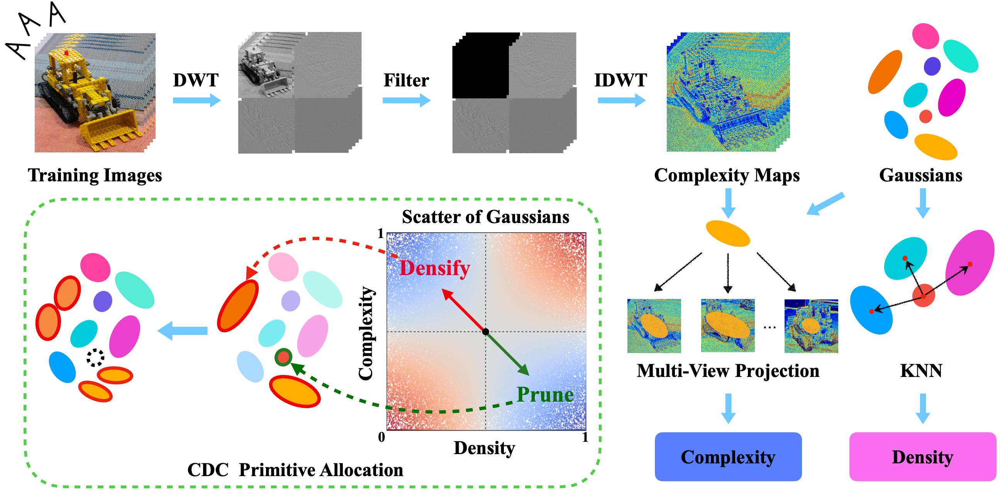

What is CDC-GS?
CDC-GS introduces a loss-agnostic visual prior for 3D Gaussian Splatting. Rather than relying on rendering-loss signals biased toward low-frequency regions, CDC-GS aligns visual complexity of training views with the spatial density of Gaussian primitives. This consistency-driven allocation enables more accurate modeling of texture-rich areas and efficient pruning elsewhere, achieving higher rendering quality under the same primitive budget.
Method Overview
Complexity-Density Consistent Primitive Allocation
CDC-GS is a 3DGS densification and pruning method that introduces a loss-agnostic visual prior for primitive allocation. It defines visual complexity from high-frequency DWT components and spatial density from the inverse geometric mean distance to neighboring Gaussians. By enforcing consistency between complexity and density, CDC-GS adaptively densifies under-reconstructed regions and prunes over-reconstructed ones, achieving higher rendering quality under the same Gaussian budget.
Quantitative Results
CDC-GS consistently surpasses baseline methods under comparable primitive budgets. Across both sparse and dense configurations, it achieves higher fidelity and perceptual quality with fewer primitives, highlighting the effectiveness of complexity–density consistent allocation for accurate structural modeling and efficient primitive utilization.
Qualitative Results

BibTeX
@inproceedings{
dong2025reframing,
title={Reframing Gaussian Splatting Densification with Complexity-Density Consistency of Primitives},
author={Zhemeng Dong and Junjun Jiang and Youyu Chen and Jiaxin Zhang and Kui Jiang and Xianming Liu},
booktitle={The Thirty-ninth Annual Conference on Neural Information Processing Systems},
year={2025},
url={https://openreview.net/forum?id=VKJTyhAtoA}
}